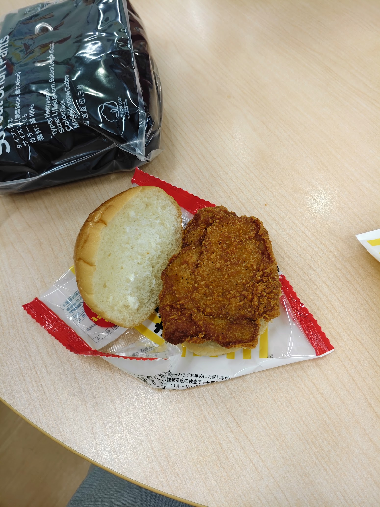
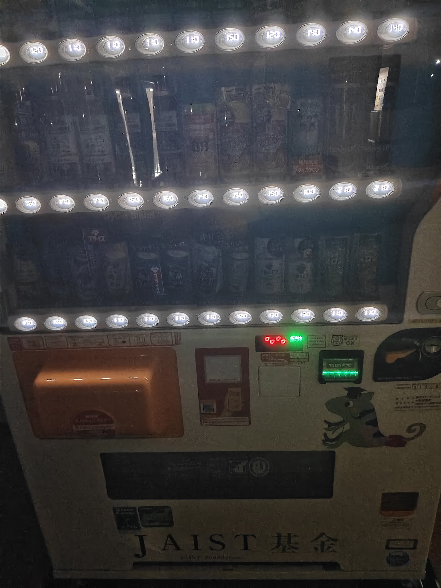
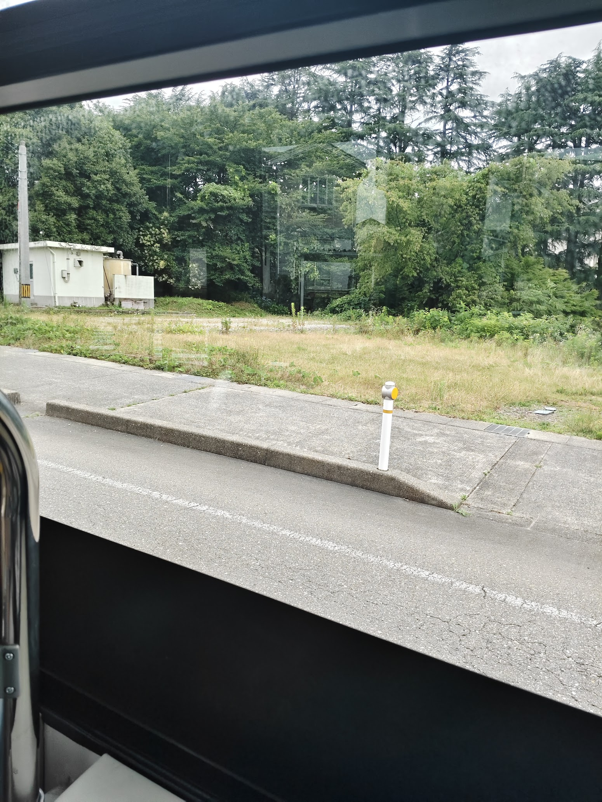
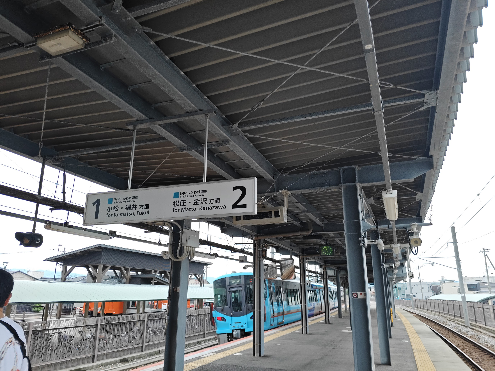
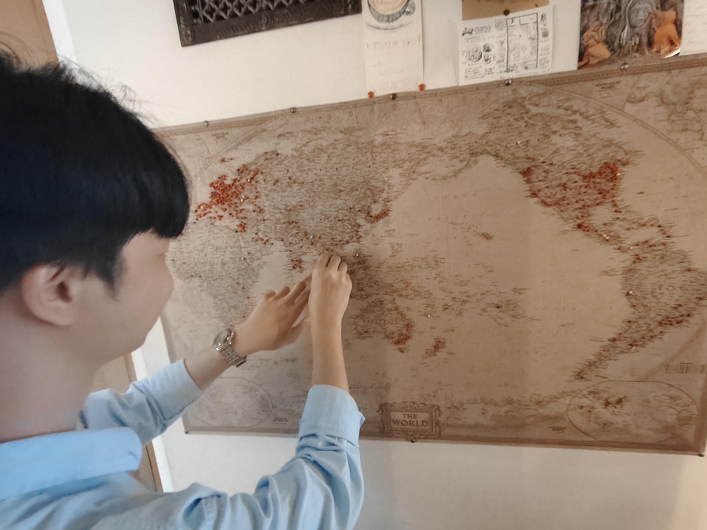
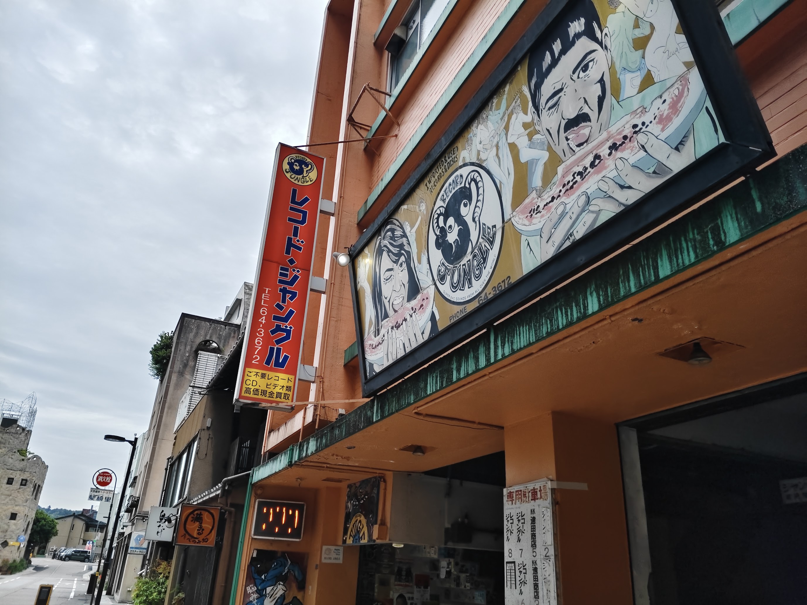
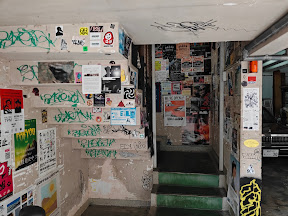
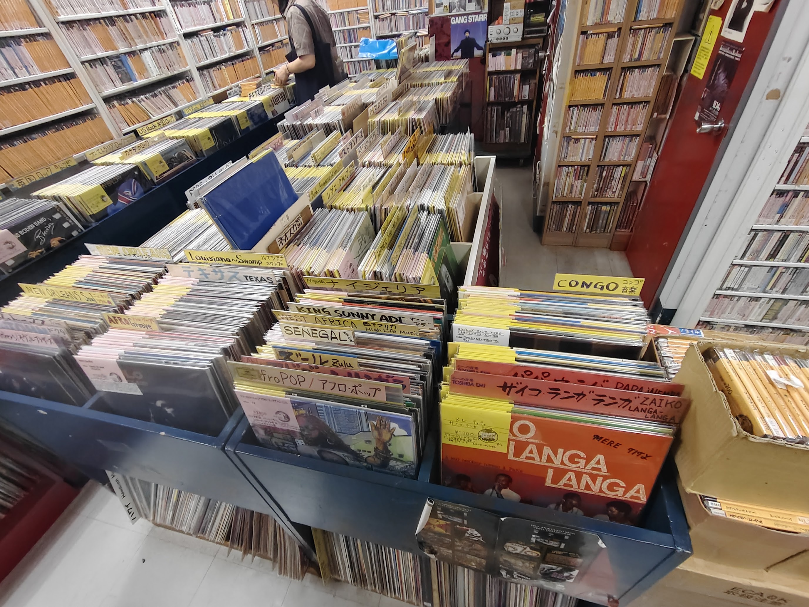
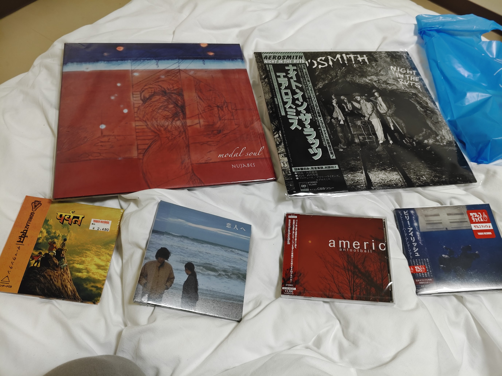
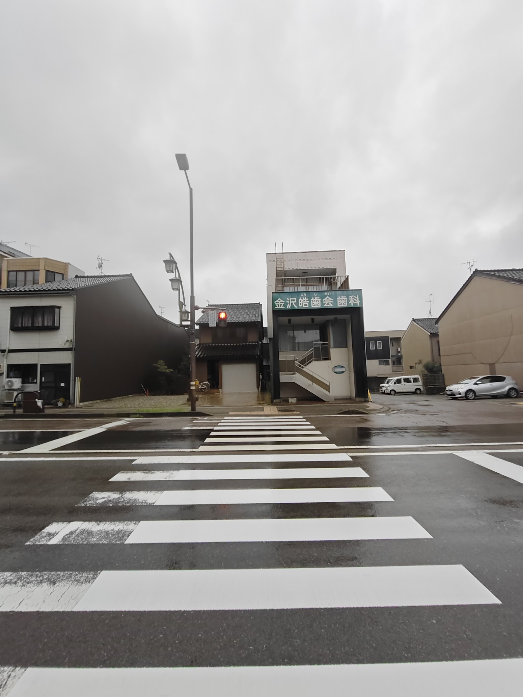

episode 4
new experiences
it was saturday yesterday. i slept all day. i was very tired from all that travelling and work. the vending machines are so convenient for late night snacking. a fellow member taught me how to make (assemble) delicious burgers at family mart.


there are a lot of vending machines around japan. seen them everywhere.
first time in kanazawa
i had planned to go along with my friend (the labmate) to kanazawa. but i missed the bus. he went ahead of me.


i was supposed to catch a shuttle for tsurugi station. i made a mistake and took the bus for nomi city.
i sat through the entire bus ride to nomi city. took the train from nomi station to kanazawa. i met my friend there.

we went to a cafe to have some coffee. we were looking for the local experiences. but the cafe was run by foreigners. haha.
this is a local experience because you can get this at this place only.
my friend (something along these lines)
the streets of japan are so clean, so peaceful. car people stop and let you cross.

went to a record shop post this called "Record Jungle". the receptionist was cool. he gave off the vibe of a music enthusiast.



i think japanese like a specific kind of music. i found a lot of beck, aerosmith, beatles, nirvana.
visited the pokecenter and another record shop called tower records. records and cds in japan are collectibles as they have something called an obi strip. few artists like daft punk release japan exclusive songs.
i did not know that you had to press a button to trigger the traffic lights to change. i waited for a long time. it was raining. i am grateful for everything.
met my friend at the station. he wanted to play arcade game (mi mi). he plays alone. he played all day. we travelled back in a shaky train. haha.
